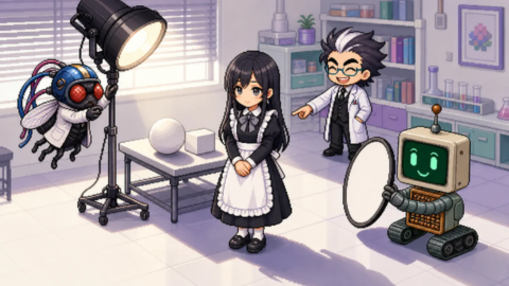
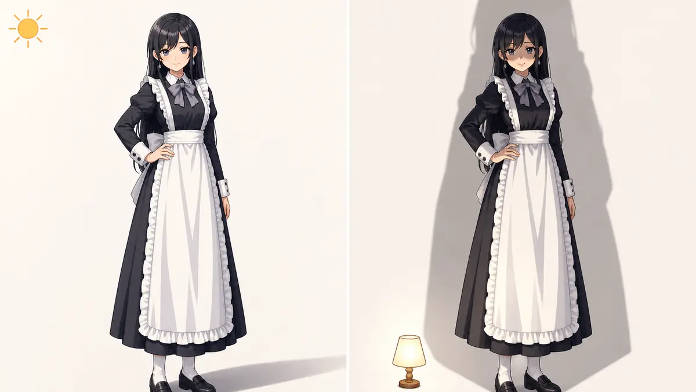
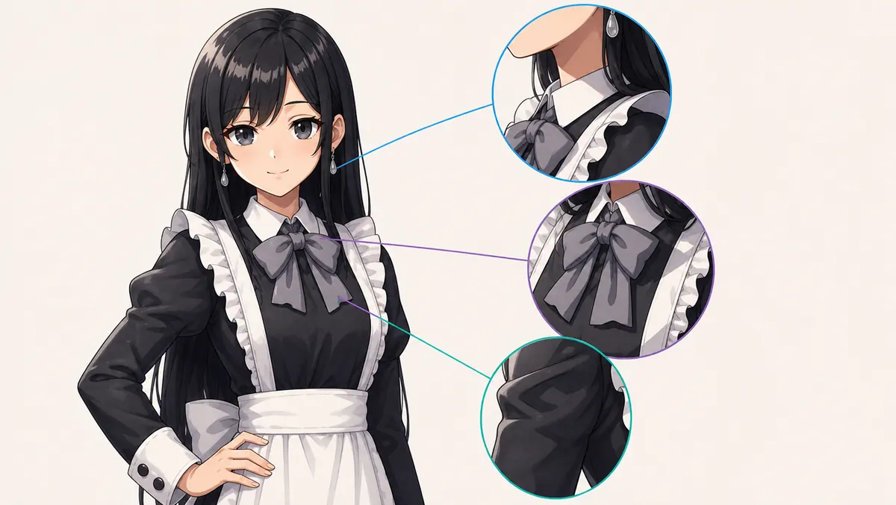
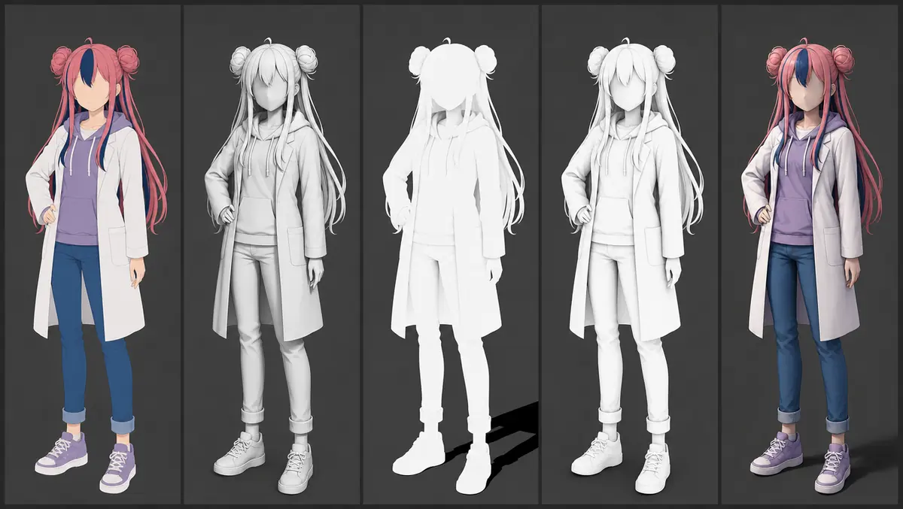
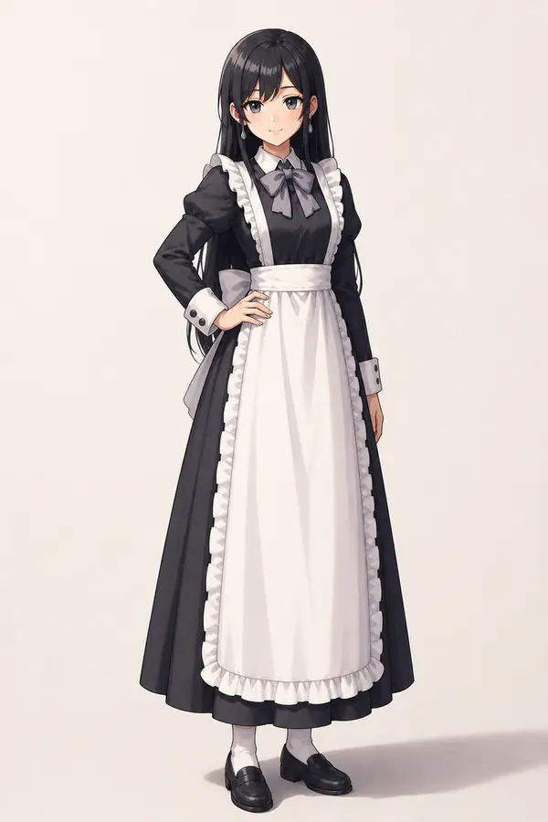
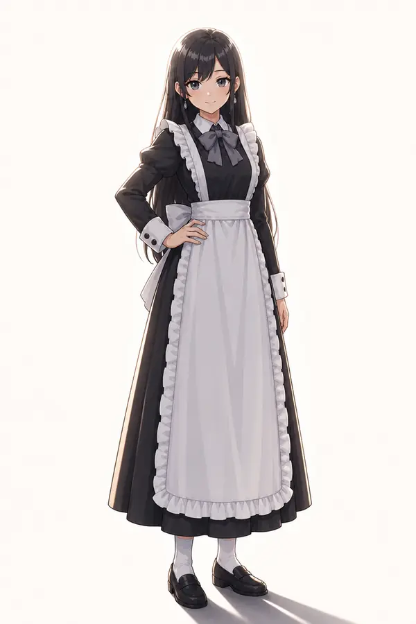
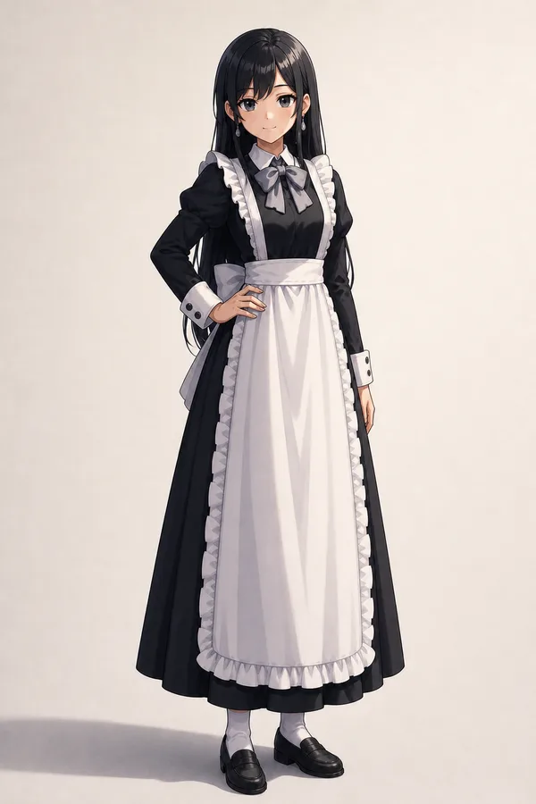
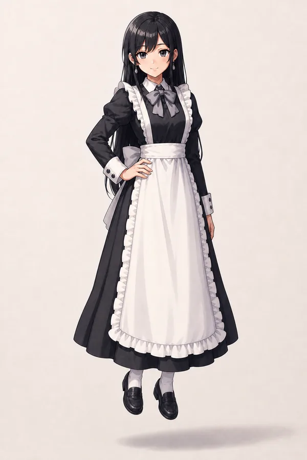

오늘의 과제

박사오늘은 조명을 하나만 켰다. 왼쪽 위다. 시아의 어디가 어두워질까?

주판봇검은 옷이니 전부 어둡습니다! 검은색으로 칠하면 끝!

초파리 연구원검은 옷에도 밝은 면과 어두운 면이 있을 텐데?

시아…저는 가만히 서 있을게요. 빛이 알아서 말해 주겠죠.

두 번째 모델은 검은 메이드복의 시아입니다. 주판봇은 '어두운 곳 = 그림자'라고 칠하고, 초파리는 광원부터 정합니다.
그림 실력·코드·수식을 몰라도 됩니다. 실험을 눌러 보며 따라오세요.
빛을 정면으로 받는 면이 가장 밝고, 옆으로 비껴갈수록 어두워집니다

학교 수학으로 보면 — 삼각비(cos) — 빛줄기 묶음이 비스듬한 면에 퍼지면 면적당 빛이 cos만큼 줄어듭니다.
| 식 조각 | 뜻 |
|---|---|
| θ (세타) | 면이 바라보는 방향과 빛이 오는 방향 사이 각도 |
| cos θ | 각도를 1(정면)~0(나란함) 비율로 바꾼 값 |
| max(0, …) | 음수면 0으로 — 뒤쪽은 빛이 없음 |
오후 햇살에 사과를 두면 햇빛 쪽 볼이 가장 밝고, 반대쪽으로 돌아갈수록 어두워집니다.
렌더링 프로그램의 가장 기본 음영 계산(램버트 음영)이 이 식입니다. 2부 5단계의 'VFX 렌더 층' 중 '직접광' 층이 바로 이것입니다.

광원이 135°(왼쪽 위)일 때 가장 밝은 점은 공의 왼쪽 위, 그림자 경계는 그 반대쪽 반원입니다.
공 위를 누르면 그 점의 θ와 cos θ가 나옵니다. 90°를 넘는 곳은 모두 0입니다.
작업에서는 검은 옷도 빛 쪽은 회색으로 밝히고, 90°를 넘는 쪽만 그림자 색을 씁니다.

AI가 그린 시아의 검은 원피스가 전부 같은 검정입니다. 무엇이 빠졌을까요?
빛 쪽 면의 밝은 회색이 빠졌습니다. cos θ가 큰 면은 검은 천이라도 더 밝아야 입체가 보입니다.
입체 그림자는 빛을 등진 면, 떨어지는 그림자는 다른 물체가 빛을 가린 자리입니다
모자를 쓰면 얼굴 위쪽이 어두워집니다. 얼굴이 빛을 등져서가 아니라 모자 챙이 빛을 가려서입니다.
애니 채색에서는 두 그림자를 같은 색으로 칠해도 경계 모양으로 구별합니다. 입체 그림자는 몸을 따라 둥글게, 떨어지는 그림자는 가린 물체의 윤곽을 닮습니다.
원기둥의 오른쪽 어두운 면은 입체 그림자라 판을 꺼도 남습니다.
판이 원기둥과 바닥에 드리운 그림자는 떨어지는 그림자라 판을 끄면 사라집니다.
작업에서는 '이 그림자의 주인은 누구인가'를 물어 두 종류를 나눠 칠합니다.

AI 그림에서 앞머리 아래 이마에 그림자가 없습니다. 광원은 위쪽입니다. 맞을까요?
위에서 빛이 오면 앞머리가 이마에 떨어지는 그림자를 드리워야 합니다. 없다면 빛 방향과 맞지 않는 그림입니다.
주름 산의 반대쪽에 생기는 작은 그림자를 선 없이 섬처럼 칠합니다
모래사장의 물결 무늬는 선이 아니라 작은 그림자 줄 덕분에 보입니다.
애니 채색의 '섬 그림자(島影)'가 이것입니다. 주름 선을 줄여 정보량을 줄이거나, 주름이 적은 곳에 넣어 정보량을 늘립니다.
광원이 낮을수록(비스듬할수록) 섬 그림자가 길어지고, 높을수록 짧아집니다.
주름이 얕으면 그림자가 거의 생기지 않습니다. 그래서 얕은 주름은 섬 그림자를 생략해도 됩니다.
작업에서는 주름 선은 큰 것만 남기고, 나머지는 섬 그림자로 바꿔 화면을 정돈합니다.
AI 그림의 소매에 주름 선이 서른 개쯤 있습니다. 더 사실적인 걸까요?
선이 많다고 사실적이지 않습니다. 빛 방향과 상관없이 선이 고르게 퍼져 있다면 오히려 주름의 산·골이 없는 무늬입니다.
그림자 속에도 바닥에서 튄 빛이 있고, 물체가 멀어질수록 그림자는 흐려집니다
학교 수학으로 보면 — 닮음비 — 광원 끝에서 물체 끝을 지나 바닥까지 긋는 두 삼각형은 닮은꼴입니다.
| 식 조각 | 뜻 |
|---|---|
| 광원 크기 | 전구·창문의 지름. 클수록 그림자가 부드럽다 |
| 물체~바닥 거리 | 떠 있는 높이 |
| 광원~물체 거리 | 조명에서 물체까지 |
흐린 날 그림자가 흐릿한 이유는 하늘 전체가 큰 광원이기 때문입니다. 맑은 날 해는 작은 광원이라 그림자가 또렷합니다.
VFX에서는 '주변 가림(앰비언트 오클루전)' 층으로 물체가 닿은 곳의 진한 어둠만 따로 계산해 얹습니다. 애니 채색의 '그림자 가장자리 진한 테두리'는 반사광을 흉내 낸 것입니다.
물체 높이 0이면 흐림이 0이라 가장 진하고 또렷합니다.
광원 지름을 키우면 같은 높이에서도 그림자가 더 부드러워집니다.
바닥이 밝을수록 공 아래쪽 그림자 안에 반사광이 더 들어옵니다. 작업에서는 그림자 속을 완전한 검정으로 칠하지 않습니다.
AI 그림에서 공중에 뜬 공의 그림자가 바닥에 닿은 공과 똑같이 또렷합니다. 무엇이 이상할까요?
떠 있으면 흐린 폭이 커지고 그림자가 옅어져야 합니다. 그림자가 똑같다면 공이 떠 있다는 정보가 사라집니다.
렌더링 프로그램은 기본 색·직접광·그림자·주변 가림을 따로 만들고 겹칩니다
사진 앱의 '밝기·그림자·하이라이트' 막대가 각각 다른 층을 조절하는 것과 비슷합니다.
영화 VFX에서는 이 층들을 '렌더 패스'라 부르고, 합성 단계에서 섞습니다. 2D 채색의 '밑색 → 1차 그림자 → 2차 그림자 → 하이라이트' 레이어도 같은 생각입니다. 렌더링 3부작 2부와 이어집니다.


'기본 색'만 켜면 납작한 색 덩어리, '직접광'을 더하면 둥근 입체, '그림자'를 더하면 바닥에 놓인 느낌, '주변 가림'을 더하면 닿은 곳이 단단해집니다.
그림자 세기를 0으로 하면 물체가 바닥에서 떠 보입니다. 3부의 주름 그림자도 이 층 생각으로 정리합니다.
작업에서는 2D 채색도 그림자 레이어를 '곱하기'로 따로 두어 나중에 세기만 조절합니다.

AI 그림 편집에서 '그림자만 옅게'가 잘 안 됩니다. 왜일까요?
AI 그림은 층이 나뉘지 않은 한 장입니다. 그래서 다시 생성하거나, 처음부터 조명 지시를 바꿔야 합니다. 층이 있는 3D·2D 작업과의 큰 차이입니다.
같은 시아, 같은 자세에서 '빛' 문장만 바꿉니다. 2부에서 배운 대로 광원 방향과 함께 그림자가 떨어지는 쪽까지 문장으로 적습니다.
그림자 방향, 리본이 드리우는 그림자, 바닥 반사광까지 적었습니다. 첨부: 시아 설정 시트

Full body character illustration, vertical 2:3. Character (match the attached reference sheet exactly): Sia, a calm maid intern, a young adult woman in her early twenties, long straight jet-black hair reaching the waist with side-swept bangs, calm gray eyes, small silver drop earrings, long-sleeved charcoal-black maid dress with puffed shoulders and white lace cuffs, white high collar with a large soft gray bow, long white frilled apron reaching the ankles, white socks, black flat shoes, no headdress. Pose: standing upright in a three-quarter view, left arm relaxed, right hand resting on the hip, calm faint smile. Lighting: one single warm light from the upper left at about 45 degrees. Form shadows on the right side of the face, body and apron folds; the hair and the large gray bow cast shadows onto the collar and chest; small floating island shadows on the sleeve folds; a darker contact shadow under the shoes and a soft cast shadow on the floor toward the lower right; a little bounce light from the bright floor inside the shadows. The black dress still shows lighter gray on the planes facing the light. High-quality anime illustration, clean lineart, two-tone cel shading with soft highlights. Plain off-white background. No text, no letters, no logos, no watermark, no revealing clothing, not resembling any famous anime character, five fingers on each hand. No headdress.
빛 문장만 바꾸고 나머지는 ①과 같습니다. 첨부: 시아 설정 시트

Full body character illustration, vertical 2:3. Character (match the attached reference sheet exactly): Sia, a calm maid intern, a young adult woman in her early twenties, long straight jet-black hair reaching the waist with side-swept bangs, calm gray eyes, small silver drop earrings, long-sleeved charcoal-black maid dress with puffed shoulders and white lace cuffs, white high collar with a large soft gray bow, long white frilled apron reaching the ankles, white socks, black flat shoes, no headdress. Pose: standing upright in a three-quarter view, left arm relaxed, right hand resting on the hip, calm faint smile. Lighting: one strong backlight from behind and slightly above. A bright rim light along the hair outline, shoulders and apron edges; the front of the body in soft even shadow with gentle bounce light from the floor; the cast shadow on the floor stretches toward the viewer. High-quality anime illustration, clean lineart, two-tone cel shading with soft highlights. Plain off-white background. No text, no letters, no logos, no watermark, no revealing clothing, not resembling any famous anime character, five fingers on each hand. No headdress.
'직접 만들어 보기'에서 나온 그림을 출발 그림으로 삼아, 문장 하나로 원리 하나만 바꿉니다. 한 번에 하나만 바꿔야 무엇 때문에 달라졌는지 알 수 있습니다. 오른쪽 그림은 같은 문장을 고치지 않고 넣어 얻은 첫 결과이며, 여러분의 결과는 조금씩 다를 수 있습니다. 예상과 달랐던 점도 '실제로 해 보니'에 그대로 적었습니다.
광원을 반대편으로 옮기면 그림자도 모두 반대편으로 가야 합니다. 2부 1·2단계의 원리를 한 문장만 바꿔 확인합니다. 빛 쪽만 바꾸고 그림자 방향을 안 적으면 그림자가 그대로 남는 실수가 자주 생깁니다.

Same image. Change only the lighting: one single light from the upper RIGHT at about 45 degrees; form shadows now on the LEFT side of the face, body and apron folds; the bow's shadow falls to the lower left; the cast shadow on the floor falls toward the lower LEFT. Keep Sia, her pose and the background exactly the same.
이 문장의 뜻 — 빛만 오른쪽 위 45° 하나로 바꾸고, 몸·리본·바닥 그림자를 모두 왼쪽으로. 시아·자세·배경은 그대로.
다시 볼 원리2부 2단계 두 가지 그림자
물체가 바닥에서 멀어지면 그림자는 옅어지고 가장자리가 흐려집니다. 2부 4단계의 '흐린 폭 = 광원 크기 × 높이 ÷ 거리'를 그림으로 확인합니다. 그림자가 발에서 떨어져 있어야 '떠 있다'는 것이 보입니다.

Same image. Change only: Sia is now doing a small gentle hop, both feet about 30 cm above the floor, skirt and apron lifted slightly by the motion and staying modest. Her cast shadow stays on the floor, separated from her feet, lighter and with softer blurry edges than before. Keep the lighting from the upper left and the background the same.
이 문장의 뜻 — 시아가 바닥에서 30cm쯤 살짝 뛰어오른 모습으로. 그림자는 발과 떨어지고 더 옅고 흐리게. 빛·배경은 그대로.
다시 볼 원리2부 4단계 반사광과 그림자 거리

| 항목 | 주판봇 | 초파리 |
|---|---|---|
| 닮음(외형 고정값) | 8 | 8 |
| 입체감(면의 방향) | 3 | 8 |
| 자연스러움(빛 방향 일관성) | 4 | 8 |
| 합계 | 15 | 24 |


점수는 이야기 속 예시입니다. 실제 그림을 평가한 값이 아닙니다.
| 주제 | 한 줄 | 작업에서는 |
|---|---|---|
| 밝기 | 밝기 = max(0, cos θ) | 90°가 그림자 경계 |
| 두 그림자 | 입체 그림자 / 떨어지는 그림자 | 그림자의 주인 찾기 |
| 섬 그림자 | 주름 산의 빛 반대쪽 | 선을 줄이고 그림자로 |
| 거리 | 흐린 폭 = 광원 × 높이 ÷ 거리 | 닿은 곳은 진하게 |
| 렌더 층 | 색·빛·그림자·가림을 따로 | 층 하나만 조절 |

이 페이지에 나온 개념·방법·비유·쓰임을 모았습니다. 검색하고, "설명 보러 가기"로 본문에 돌아갑니다.
지식 색인을 출처와 함께 파일로 내려받습니다. 서지 관리는 BibTeX·RIS, 온톨로지 편집은 Turtle, 그래프 도구는 CSV, 여러 페이지 합치기는 kg.json입니다.